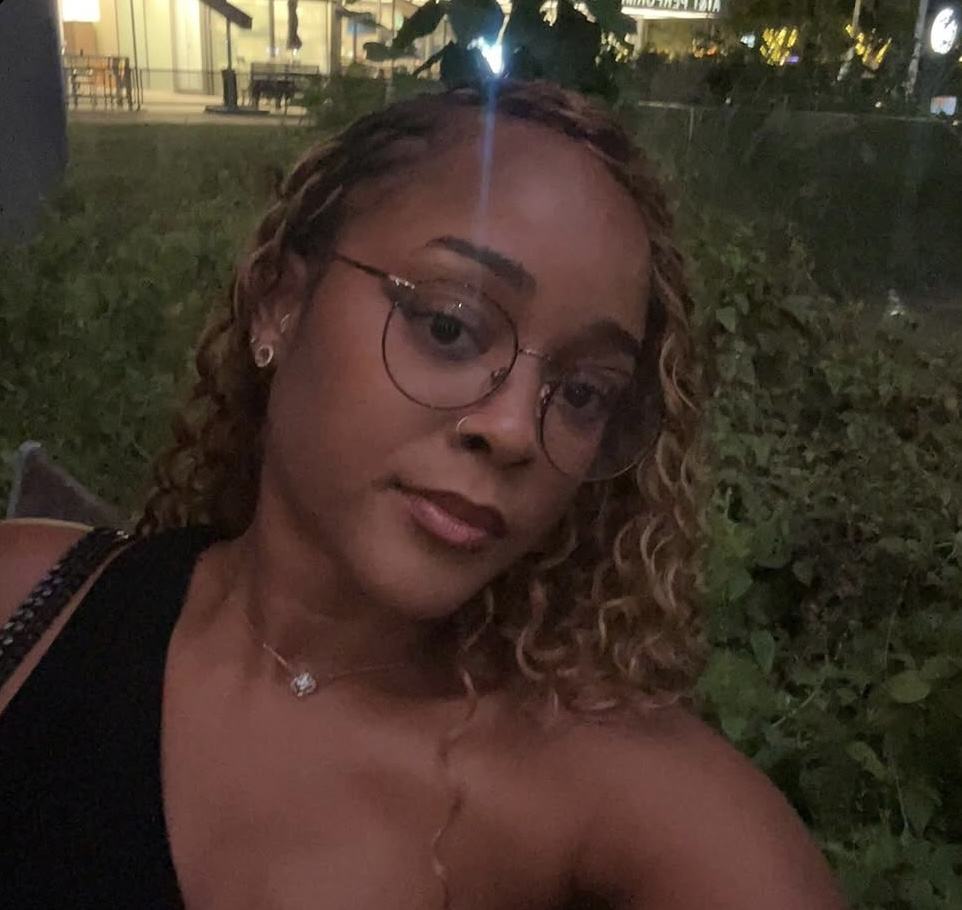

Dallas, Texas
United States
Online Now!
| General | Fashion, skating, travel |
|---|---|
| Music | Too Deep For the Intro -J. Cole |
| Movies | Bring It On |
| Hobbies | Plants, flag football |
Welcome to Bri's World!
This is where you can learn all about her interests and what makes her unique..
Brianna is not your stereotypical middle child of three. Instead of falling victim to the middle child syndrome, her big personality almost demands attention everywhere she goes. She is only 5 feet and 5 inches but if you ask anyone who knows her, they'll say she's 6 feet at the very least. She was born February 19th, making her the water sign Pisces. Brianna is a self-proclaimed earthy spiritual person and doesn't fully believe that the personality traits of a Pisces match her very well. A Pisces is said to be compassionate, artistic, intuitive, gentle, wise and musical. She says she has a hard exterior and doesn't allow herself to present as gentle as a way of protecting herself...
Click here to read more about Bri's story